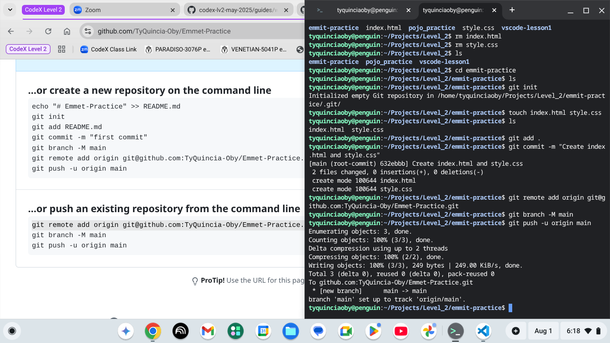
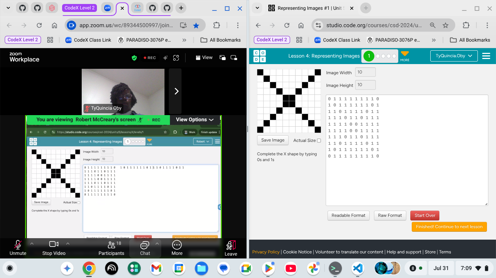

Installing and touring VS Code was a seamless process. VS Code is essentially a terminal, file navigation and a text editor in one space.
VS Code allows the developer to open multiple files to flip between.
The developer can also have multiple terminals open at once where one can run commands, for example pushing/pulling and adding files into the repository
Emmet is a tool a developer can use to complete HTML and CSS coding quicker
{For example, typing "ul>li*3{Red}" then press tab, will create an unordered list with "Red" in a list three times}
In coding, we can use on and off or binary codes to represent images.
In the image below, the black squares represent 1s (on) and the white 0s (off).
Binary code can represent 1s and 0s, in turn a language a computer can understand.
Collaborating taught me four things